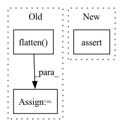

Pattern ID :15302
Before Change
sqrt_alpha_prod = sqrt_alpha_prod.unsqueeze(-1)
sqrt_one_minus_alpha_prod = (1 - self.alphas_cumprod[timestep]) ** 0.5
sqrt_one_minus_alpha_prod = sqrt_one_minus_alpha_prod.flatten()
while len(sqrt_one_minus_alpha_prod.shape) < len(
original_samples.shape
):
sqrt_one_minus_alpha_prod = sqrt_one_minus_alpha_prod.unsqueeze(-1)
noisy_samples = (
sqrt_alpha_prod * original_samples
+ sqrt_one_minus_alpha_prod * noise
)After Change
return prev_latent
def add_noise(self, latents: Tensor, eps: Tensor, i: int) -> Tensor:
assert 0 <= i < self.steps
// eq 4
return latents * self.ᾱ[i].sqrt() + eps * self.ϖ[i].sqrt()In pattern: SUPERPATTERN
Frequency: 3
Non-data size: 3
Instances Fragment ID: 51970024
Project Name: tfernd/sd-fused
Commit Name: 4e29f2889a4c47e86930e976912fa12ac53185f7
Time: 2022-10-05
Author: ThalesFDFernandes@gmai.com
File Name: sd/scheduler/ddim.py
M Class Name: DDIMScheduler
N Class Name: DDIMScheduler
M Method Name: add_noise(4)
N Method Name: add_noise(4)
M Parent Class:
N Parent Class:
M File Name: sd/scheduler/ddim.py
N File Name: sd/scheduler/ddim.py
M Start Line: 150
M End Line: 171
N Start Line: 78
N End Line: 81
Before Change
raise ValueError(f"PatchEmbed module. Input image width ({W}) doesn"t match model ({self.img_size[1]}).")
x = self.proj(x)
if self.flatten:
x = x.flatten( 2) .transpose(1, 2) // BCHW -> BNC
x = self.norm(x)
return xAfter Change
def forward(self, x):
B, C, H, W = x.shape
// FIXME look at relaxing size constraints
assert H == self.img_size[0] and W == self.img_size[1], \
f"Input image size ({H}*{W}) doesn"t match model ({self.img_size[0]}*{self.img_size[1]})."
x = self.proj(x).flatten(2).transpose(1, 2) // B Ph*Pw C
if self.norm is not None: Fragment ID: 51970030
Project Name: eora-ai/torchok
Commit Name: ab2534f05b48a529d03f8c28af2579245772f4e0
Time: 2022-07-11
Author: rashit.bayazitov.1995@gmail.com
File Name: src/models/modules/blocks/patch_embedding.py
M Class Name: PatchEmbed
N Class Name: PatchEmbed
M Method Name: forward(2)
N Method Name: forward(2)
M Parent Class: nn.Module
N Parent Class: nn.Module
M File Name: src/models/modules/blocks/patch_embedding.py
N File Name: src/models/modules/blocks/patch_embedding.py
M Start Line: 30
M End Line: 37
N Start Line: 50
N End Line: 55
Before Change
if self.auxiliary:
isinstance(self._model.auxiliary_head, AuxiliaryHead)
feats, feats_aux = self._model.features.forward(self._model.normalize(_input), auxiliary=True)
logits = self._model.classifier(self._model.flatten( self._model.pool(feats)) )
logits_aux = self._model.auxiliary_head(feats_aux)
return super().loss(_output=logits, _label=_label) \
+ self.auxiliary_weight * super().loss(_output=logits_aux, _label=_label)After Change
def loss(self, _input: torch.Tensor = None, _label: torch.Tensor = None,
_output: torch.Tensor = None, amp: bool = False, **kwargs) -> torch.Tensor:
if self.auxiliary:
assert isinstance(self._model.auxiliary_head, AuxiliaryHead)
if amp:
with torch.cuda.amp.autocast():
return self.loss_with_aux(_input, _label, _output) Fragment ID: 51970019
Project Name: ain-soph/trojanzoo
Commit Name: 60189e04e85518439a94d1addd0c30f826c39fed
Time: 2021-03-09
Author: ain-soph@live.com
File Name: trojanvision/models/darts.py
M Class Name: DARTS
N Class Name: DARTS
M Method Name: loss(5)
N Method Name: loss(4)
M Parent Class: ImageModel
N Parent Class: ImageModel
M File Name: trojanvision/models/darts.py
N File Name: trojanvision/models/darts.py
M Start Line: 64
M End Line: 69
N Start Line: 65
N End Line: 71